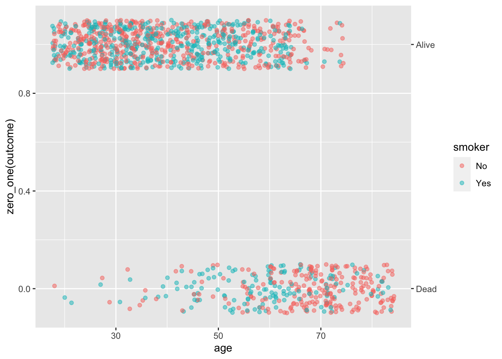
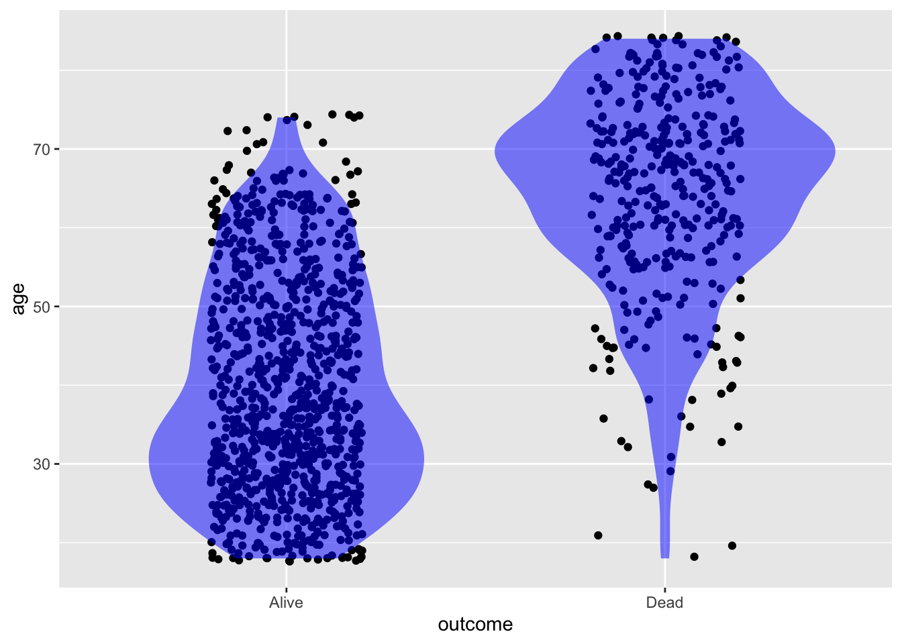
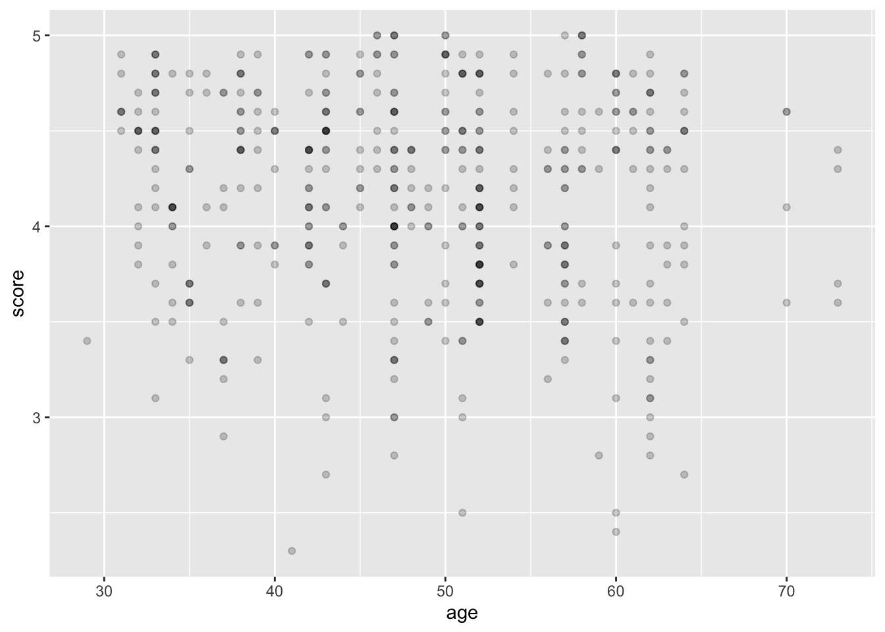
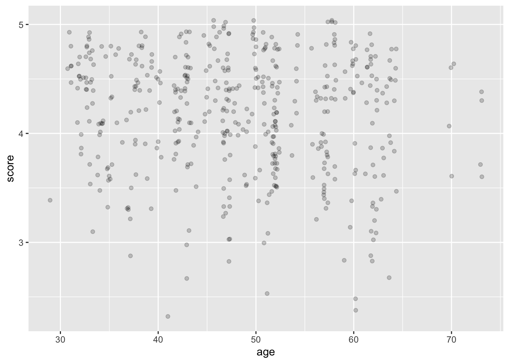
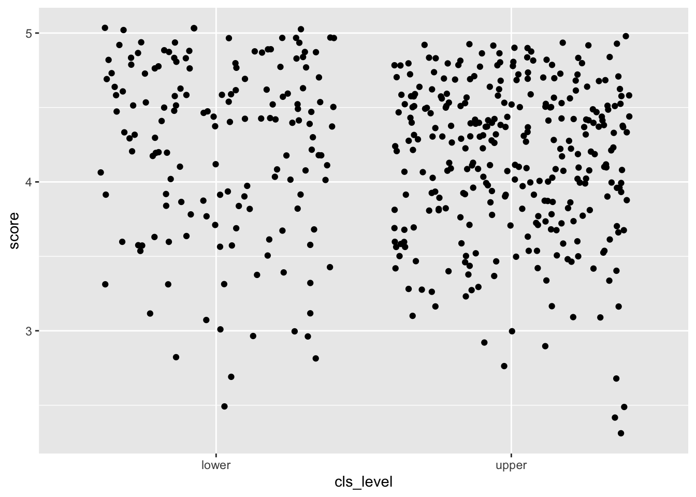
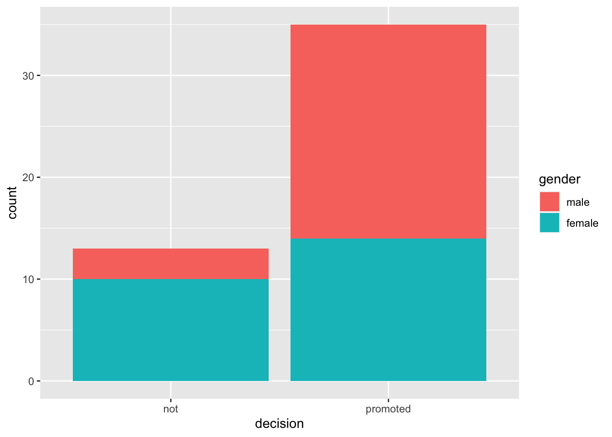
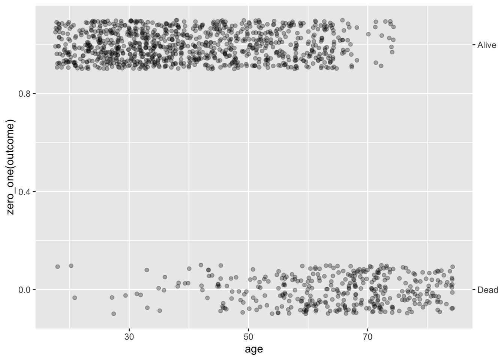
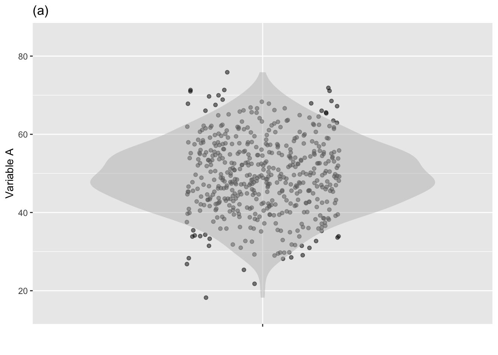
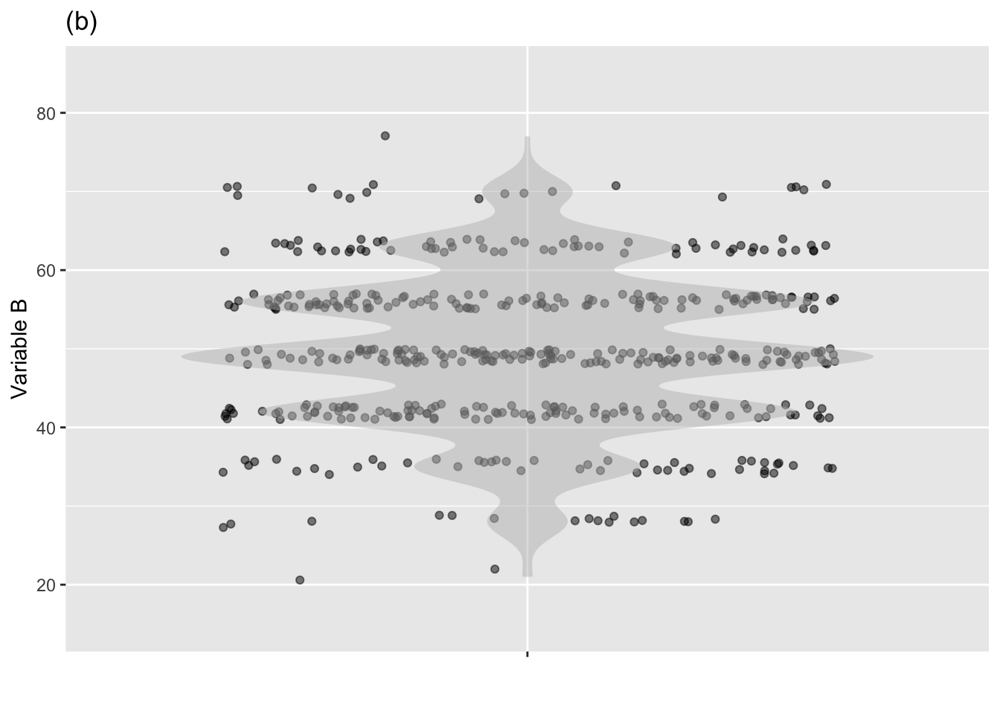
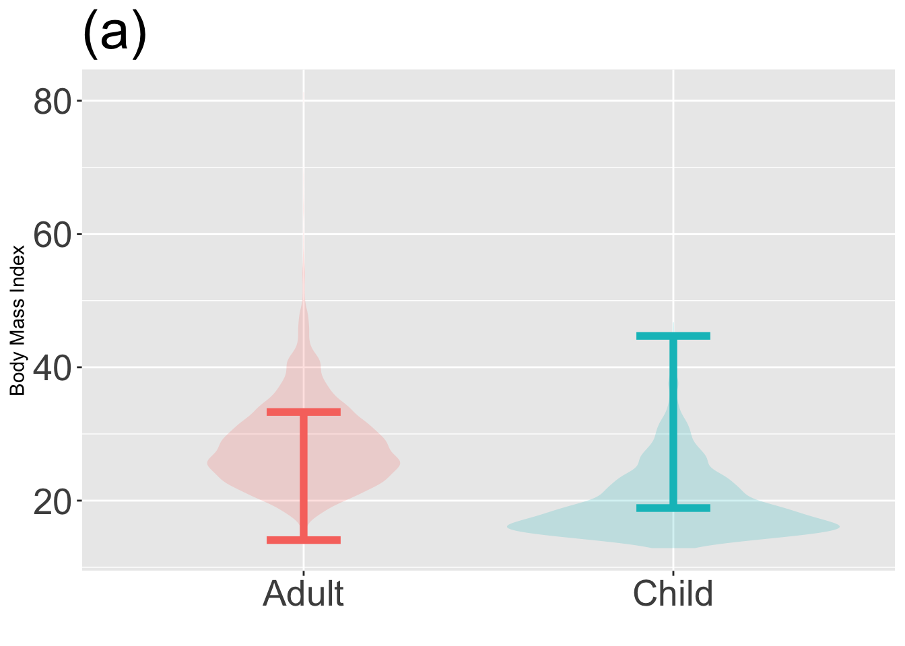

| outcome | smoker | age |
|---|---|---|
| Dead | No | 56 |
| Alive | Yes | 54 |
| Alive | Yes | 21 |
| Dead | No | 72 |
| Alive | Yes | 30 |
| Alive | No | 19 |
| Alive | Yes | 46 |
| Alive | No | 31 |
| Alive | No | 74 |
| Alive | Yes | 32 |
Math 300R NTI Lesson 19
Statistical thinking
In the first half of the course, we examined data wrangling methods—group_by(), summarize() and tally() in particular—for summarizing variables and breaking up the summaries by groups.
In this second half of the course, we will be emphasizing the relationships between variables. The conceptual framework we’ve used for describing such relationships involves choosing a response variable and selecting one or more explanatory variables. Within this framework, you’ve already seen regression techniques for describing how a numerical response variable can be related to numerical explanatory variables. Something new you will see in the second half of the course is using regression techniques to handle categorical response variables. This will allow us to extend regression to cover such things as proportions and probabilities.
Graphics can be a powerful way to perceive relationships between variables. In keeping with the response/explanatory framework, our go-to graphical technique will be to plot data as a “point plot” absolutely sticking to the convention that the response variable will be assigned to the vertical axis. Note that we’ll use the term “point plot” rather than the “scatter plot” that was used in the early graphics chapters. That’s partly because we’re going to use the idea of “scattering” in a different way.
We’re also going to adopt a new graphical convention: that statistical summaries should always be graphed as a layer on top of the raw data from which the summaries are derived. This means that we’ll switch away from histograms as a way of displaying distributions. Why? Because the vertical axis on a histogram does not correspond to the values of a response variable. Similarly, barplots won’t be appropriate, because the response variable in a barplot is represented by color rather than position on a vertical axis.
Overall, both the graphical display of data and summaries and the calculation of numerical summaries like means and proportions will become much simpler to accomplish, since relationship summaries will be produced using using lm() and closely related model types. Data graphics will be made with geom_point() and closely related geoms.
Graphing data and statistical annotations
Categorical response variables
To get started, we’ll work with categorical response variables that are “dicotomous” or, equivalently, “binomial,” that is, with only two methods. This covers a large fraction of the situations where categorical response values are needed. We’ll leave those situations where there are lots of levels for the response variable to courses on “machine learning,” a topic we can only scratch the surface of in this introductory course.
The important insight into using categorical variables in regression models is encapsulated in the idea of the 0-1 (“zero-one”) encoding. To illustrate, consider the mosaicData::Whickham data frame that records the age, smoking status, and survival of 1000 or so nurses in the UK. The relationship that motivated the collection of these data is between smoking and survival. Taking a few rows from the data frame let’s us easily see the types of the variables involved:
HOW TO USE math300::zero_one()
Plotting a zero-one response variable with correctly labelled axes.
P <- Whickham %>%
gf_jitter(zero_one(outcome) ~ age, color=~smoker, height=0.1, alpha=0.5) %>%
label_zero_one()
P
We might equally well plot age as a function of outcome:
gf_jitter(age ~ outcome, data = Whickham, width=0.2) %>% gf_violin(color=NA, fill="blue", alpha=0.5)
PLOT OUT A MODEL
mod <- model_train(zero_one(outcome) ~ age + smoker, data = Whickham)
# fun <- mod_fun(mod)
# P %>% mosaicCalc::slice_plot(fun(age, smoker="Yes") ~ age, color="red")Intervals
Once you have FIXES MOSAICMODEL, Generate a “prediction” interval and use gf_errorbar() to plot it over the model.
Objectives
19.1 Convert to the response vs explanatory format for data graphs.
19.2 Understand the covering of a variable by an interval specified by a coverage level (e.g. 0.95) and make a data graphic annotated by such intervals.
19.3 Be able to produce point plots overlaid with “violin” plots to display the density of a variable. (This should really go in the first half of the course, but ModernDive doesn’t do it.)
19.4 Convert categorical variables to a 0-1 encoding. a. Generate graphics appropriate to a categorical encoding. (jitter plots) b. Apply modeling techniques to 0-1 encodings of binomial response variables.
Reading
TBD
Lesson
This lesson marks the beginning of a new phase of the course. Thus far, we’ve worked with techniques* for data wrangling, graphics, and regression modeling. Now we address the question of what a regression model (and other information that we might have) can tell us about the real world.*
Learning Checks
Setup
The math300 package will be needed for lessons 20 through 39.
library(math300)
library(moderndive)
library(NHANES)One of these pipeline commands will work and the other won’t. Which one will work? Explain why the other one doesn’t work.
lm(net ~ age, data = TenMileRace) TenMileRace %>% lm(net ~ age)An example from the OpenIntro book uses data on promotions. Some data wrangling commands that might be relevant are these:
promotions %>% tally()# A tibble: 1 × 1 n <int> 1 48promotions %>% group_by(decision) %>% tally()# A tibble: 2 × 2 decision n <fct> <int> 1 not 13 2 promoted 35promotions %>% group_by(gender) %>% tally()# A tibble: 2 × 2 gender n <fct> <int> 1 male 24 2 female 24promotions %>% group_by(gender, decision) %>% tally()# A tibble: 4 × 3 # Groups: gender [2] gender decision n <fct> <fct> <int> 1 male not 3 2 male promoted 21 3 female not 10 4 female promoted 14
You could use such wrangling to compare groups. For instance, you can use the results of the last command to calculate separately the proportion of males who were promoted and, similarly, the proportion of females.
a. What are those proportions?
The following wrangling command will calculate the proportions for you, but it is a bit complicated:
promotions %>%
group_by(gender) %>%
summarize(prop_promoted = sum(decision=="promoted") / n())b. Use the above command to check your calculations in (a).
c. In the regression paradigm, the comparison of proportions between the two groups is done directly in lm(), like this:
promotions %>%
mutate(promoted = zero_one(decision, one="promoted")) %>%
lm(promoted ~ gender, data = .) %>%
coefficients() (Intercept) genderfemale
0.8750000 -0.2916667 We’ll explain the purpose of zero_one() in Lesson 19, but putting that matter aside for a moment, compare the two coefficients in the regression model to the proportion results you got from wrangling.
What does the value of the intercept coefficient correspond to in the wrangling results?
What does the
genderfemalecoefficient correspond to in the wrangling results? (Hint: you will have to do a bit of arithmetic on the wrangling results.)
19.1
Consider the moderndive::evals data that records students’ evaluations (score, on a 1-5 scale) of the professors in each of several courses (the course ID), as well as the age, “average beauty rating” (bty_avg) of the professor, enrollment in the course (cls_students) and the level o the course (cls_level). Each row in the data frame is an individual course section.
| ID | score | age | bty_avg | cls_students | cls_level |
|---|---|---|---|---|---|
| 329 | 2.7 | 64 | 2.333 | 22 | upper |
| 313 | 4.2 | 42 | 2.667 | 86 | upper |
| 430 | 4.5 | 33 | 5.833 | 120 | lower |
| 95 | 4.2 | 48 | 4.333 | 33 | upper |
| 209 | 4.8 | 60 | 3.667 | 34 | upper |
| 442 | 3.6 | 61 | 3.333 | 39 | lower |
| 351 | 4.6 | 50 | 3.333 | 26 | lower |
| 317 | 3.7 | 52 | 6.500 | 44 | upper |
| 444 | 4.1 | 52 | 4.500 | 111 | lower |
| 315 | 3.8 | 52 | 6.000 | 88 | upper |
The following commands model score versus age and plots the data as a point plot.
lm(score ~ age, data = moderndive::evals) %>% coefficients() (Intercept) age
4.461932354 -0.005938225 openintro::evals %>% gf_point(score ~ age, alpha=0.2 )
- Explain why some of the dots are darker than others?
Solution
All the ages have integer values—e.g., 43, 44, 45—so the dots line up in vertical lines.
Similarly, the scores have values only to one decimal place—e.g., 3.1, 3.2, 3.3—so the dots line up in horizontal lines. If there are two or more rows in evals that have the same age and score, the dots will be plotted over one another. Since transparency (alpha = 0.2) is being used, points where there is a lot of overplotting will appear darker.
- Remake the plot, but using
gf_jitter()instead ofgf_point(). Explain what’s different about the jittered plot. (Hint: Almost all of the dots are the same lightness.)
Solution
openintro::evals %>% gf_jitter(score ~ age, alpha=0.2 )
“Jittering” means to shift each dot by a small random amount. This reduces the number of instances where dots are overplotted.
- Now make a jitter plot of score versus class level (
cls_level).- What do the tick-mark labels on the horizontal axis describe? Are they numerical?
- To judge from the plot, are their more lower-level than upper-level courses? Explain briefly what graphical feature lets you answer this question at a glance.
Solution
openintro::evals %>% gf_jitter(score ~ cls_level)
- The tick-mark labels are the levels of the categorical variable
cls_level. The are words, not numbers. - There are many more dots in the right column than in the left. Since
lowerlevel class are shown in the left column, there are fewer lower-level courses than upper-level courses.
The two columns of points in the plot you made in (3) are not separated by very much empty space. You can fix this by giving
gf_jitter()an argumentwidth=0.2. Try different numerical values forwidthand report which one you find most effective at making the two columns clearly separated while avoiding overplotting.Are the scores, on average, different for the lower- vs upper-level classes? It’s hard to get more than a rough idea of the distribution of scores by looking at the “density” of points. The reason is that the number of points differs in the two columns. But there is an easy fix: add a layer to the graphic that shows the distribution (more or less like a histogram displays a distribution of values). You can do this by piping the jitter plot layer into a geom called a “violin,” like this:
openintro::evals %>%
gf_jitter(score ~ cls_level) %>%
gf_violin(fill="blue", alpha=0.2, color=NA)
Explain how to read the violins.
19.2
The openintro::promotions data comes the the 1970s and records the gender of 38 people along with the result of a decision to promote (or not) the person. =
Chapter 2 of ModernDive suggests graphically depicting decision versus gender by using a bar plot. There are two ways to make the bar plot, depending on which variable you assign to the horizontal axis and which to the fill color.
promotions %>% gf_bar(~ decision, fill=~ gender)
promotions %>% gf_bar(~ gender, fill=~decision)

Plots like those in ?@fig-promotion-bars might be attractive or not, depending on your taste. What they don’t accomplish is to make sure which is the response variable and which the explanatory variable.
The choice of response and explanatory variables depends, of course, on what you are trying to display. But everyday English gives a big hint. For instance, you might describe the question at hand as, “Does gender affect promotion decisions.” Here, the variable doing the affecting is gender, and the outcome is the decision.
Modeling decision as a function of gender is easy once you convert the response variable to a zero-one variable. Like this:
mod <- lm(zero_one(decision, one="promoted") ~ gender, data = promotions)
coefficients(mod) (Intercept) genderfemale
0.8750000 -0.2916667 mosaicModel::mod_eval(mod) gender model_output
1 male 0.8750000
2 female 0.5833333- Explain what is the relationship between the model coefficients and the model outputs.
Solution
The coefficients tell how to calculate the model output. These coefficients say that the model output will be 0.875, but subtract 0.292 if the person is female.
The model outputs give the probability of being promoted for each of the two genders.
- Make this plot and explain what the red lines show. (We don’t expect you to be able to write the command to generate such plots on your own, but we do expect you to be able to interpret them.)
promotions %>%
gf_jitter(zero_one(decision) ~ gender, height=0.2, width=0.2) %>%
gf_errorbar(model_output + model_output ~ gender, data=mod_eval(mod),
color="red", inherit=FALSE) %>%
label_zero_one()
Solution
The red lines show the proportion of the people in each gender group who were promoted. The y-axis scale on the left refers to the zero-one encoding of decision, while the y-axis labels on the right make it easier to read off the numerical value of the proportion.
19.3
The mosaicData::Whickham data from comes from a survey of a thousand or so nurses in the UK in the 1970s. The data record the age of each nurse along with whether the nurse was still alive in a follow-up survey 20 years later (outcome).
Make this graph from the Whickham data:
gf_jitter(zero_one(outcome) ~ age, data = Whickham, alpha=0.3, height=0.1) %>%
label_zero_one() 
Explain in everyday language what the graph shows about the lives of humans.
Make the graph again, but leave out the
%>% label_zero_one(). Then explain whatlabel_zero_one()does.
Solution
The graph shows that young nurses tended to be alive at the 20-year follow-up, older nurses not so much.
%>% label_zero_one()adds an axis on the left of the graph showing that in the zero-one tranform ofoutcome, “Alive” is assigned the value 1 and “Dead” the value 0.
Solution
19.4
About the summarization of models. Pipe the model fit into any of four functions:
%>% coefficients()%>% regression_summary()%>% rsquared()%>% confint()
REDO confint() so that the columns are named lower, middle, upper
Solution
19.5 (Obj. 19.3)
Calculation of a 95% coverage interval (or any other percent level interval) is straightforward with the right software. To illustrate, consider the efficiency of cars and light trucks in terms of CO_2 emissions per mile driven. We’ll use the CO2city variable in the math300::MPG data frame. The basic calculation using the mosaic package is:
df_stats( ~ CO2city, data = math300::MPG, coverage(0.95)) response lower upper
1 CO2city 276.475 684.525The following figure shows a violin plot of CO2city which has been annotated with various coverage intervals. Use the calculation above to identify which of the intervals corresponds to which coverage level.
- 50% coverage interval -A- (c)
- 75% coverage interval -A- (e)
- 90% coverage interval -A- (g)
- 100% coverage interval -A- (i). This extends from the min to the max, so you could have figured this out just from the figure.

19.6 (Obj 19.3)
The two jitter + violin graphs below show the distribution of two different variables, X and Y. Which variable has more variability?


Solution
There is about the same level of variability in variable A and variable B. This surprises some people. Remember, the amount of variability has to do with the spread of values of the variable. In variable B, those values are have a 95% prediction interval of about 30 to 65, about the same as for variable A. There are two things about plot (b) that suggest to many people that there is more variability in variable B.
- The larger horizontal spread of the dots. Note that variable B is shown along the vertical axis. The horizontal spread imposed by jittering is completely arbitrary: the only values that count are on the y axis.
- The scalloped, irregular edges of the violin plot.
On the other hand, some people look at the clustering of the data points in graph (b) into several discrete values, creating empty spaces in between. To them, this clustering implies less variability. And, in a way, it does. But the statistical meaning of variability has to do with the overall spread of the points, not whether they are restricted to discrete values.
19.7 (Objs. 19.3 & 19.4)
The graphs below show a violin plot of body mass index (BMI) for adults and children. One of the graphs shows a correct 95% coverage interval on BMI, the other does not.
Identify the incorrect graph and say what feature of the graph led to your answer.


Solution
Graph (b) is correct. In graph (a), you can see that the interval fails to include a lot of the low BMI children and extends too high. For adults, the graph (a) interval extends too far low and doesn’t go high enough.
19.E
There are two equivalent formats describing an interval numerically that are widely used:
- Specify the lower and upper endpoints of the interval, e.g. 7 to 13.
- Specify the center and half-width of the interval, e.g. 10 ± 3, which is just the same as 7 to 13.
Complete the following table to show the equivalences between the two notations.
| Interval | bottom-to-top | plus-or-minus |
|---|---|---|
| (a) | 3 to 11 | |
| (b) | 108 ± 10 | |
| (c) | 30 ± 1 | |
| (d) | 97 to 100 | |
| (e) | -4 to 16 |
Solution
- 7 ± 4
- 98 to 118
- 29 to 31
- 98.5 ± 1.5
- 6 ± 10
It’s a matter of judgement which format to use. The bottom-to-top notation highlights the range of the interval while the plus-or-minus notation emphasizes the center of the interval. As a rule of thumb, I suggest this:
- If the first two digits are different between the top and bottom of the interval, use the bottom-to-top notation. So, write 387 to 393. If the first two digits are the same, use plus-or-minus. For instancer, the ratio of the mass of the Earth to that of the Moon is 81.3005678 ± 0.0000027. This is easier to take in at a glance than the equivalent 81.3005651 - 81.3005708
19.F
Still in draft
Suppose there are other explanatory variables to be displayed. In that case, we will use color and faceting. If there are no explanatory variables, as in y ~ 1, we will jitter the data horizontally to avoid overplotting.]
Documenting software
- File creation date: 2022-11-29
- R version 4.2.1 (2022-06-23)
tidyversepackage version: 1.3.2
Violins versus boxes
All of the graphical statistical annotations are human inventions. Each invention attempts to meet a need, but usually, the invention is a compromise between the statistical objective and the computational and graphical resources available. The box plot format is a case in point. The statistical goal of a box plot is to display the distribution of values of a variable. It was invented in a time when graphics were mostly drawn by hand and computers were not widely available. The computations behind a box plot produce a five-number summary: min, first quartile, median, third quartile, max. It’s straightforward (but tedious!) to do these by hand since they are based on sorting and counting. The drawing itself uses only straight lines, which are easy to draw by hand with only a pencil and a straightedge.
A violin plot requires hundreds or thousands of evaluations of the gaussian function along with post-processing. They are not feasible for a human; a computer is required. Similarly, drawing the detailed shape of the violin (?@fig-violin-intro) requires a computer.
The box plot has important deficiencies. It is appropriate only for uni-modal distributions and doesn’t give even a hint of possible bi-modality. The sharp boundaries of the box and endpoints of the whiskers suggest that even smooth density shapes have abrupt transitions. Points are marked as “outliers” in order to keep the whiskers from becoming absurdly long, but box plots of data with a normal (gaussian) distribution will produce such “outliers” whenever the sample size is large.
When it comes to computing power, we are today unimaginably rich compared to the generation that introduced box plots. In a sense, we are so rich we can use expensive, well made products such as a violin. The box-plot generation was living in computational poverty. Not having the (computational) funds to buy a violin, they had to make do with primitive instruments they had to make do with the materials at hand, just as early blues mucisians, coming out of poverty, often had to build instruments such as a cigar-box guitar.

A cigar-box guitar